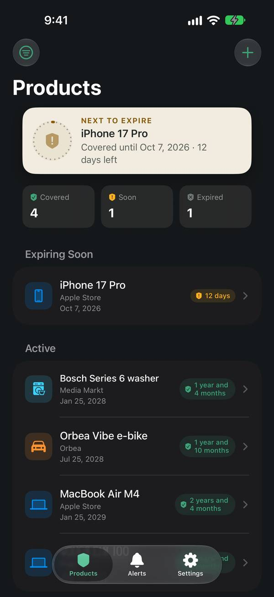
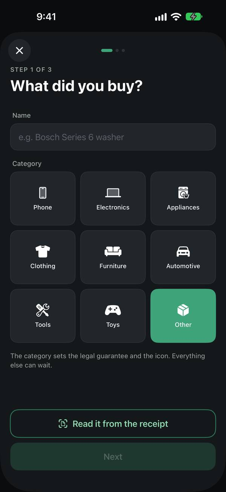
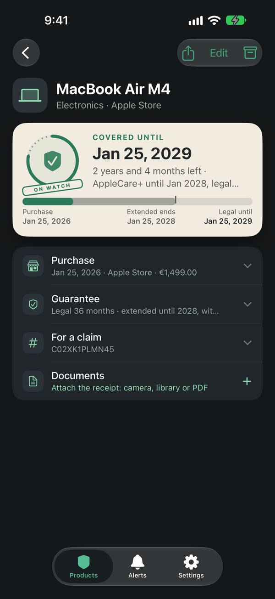
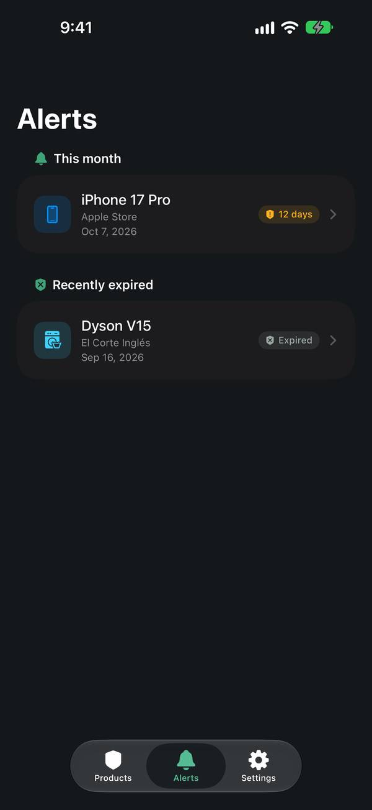

Seize Apps · iOS
Kover
Les tickets s’effacent, les garanties expirent sans prévenir. Kover lit la date, le magasin et le montant sur une photo ou un PDF du ticket, calcule la garantie légale de ton pays et range la photo, le numéro de série et le contact du SAV au même endroit, avec un rappel un mois avant, une semaine avant et le jour même de la fin.
Télécharger dans l’App Store



Ce qu’elle fait
Une seule chose, bien faite.
Trois questions, puis le sceau
Ce que tu as acheté, quand et où, combien. Ou laisse le ticket répondre : appareil photo, Photothèque ou un PDF reçu par e-mail, et les étapes arrivent pré-remplies. L’enregistrement se termine sur « Couvert jusqu’au ».
Couvert jusqu’au…, en toutes lettres
La garantie légale selon le pays — 36 mois en Espagne — plus l’extension de garantie s’il y en a une. « Encore 3 ans », pas un compte à rebours en jours, sur un sceau qui s’use avec le temps. Des rappels un mois avant, une semaine avant et le jour même.
Tout pour le jour où tu en as besoin
Numéro de série, téléphone ou site du SAV à un toucher, et la photo du ticket. Réclamé, remplacé ou plus à toi : archive au lieu de supprimer. Kover Pro ajoute plus de documents par produit, un PDF de réclamation, l’export CSV et Siri : un achat unique, avec un essai gratuit de 30 jours.
Confidentialité
À toi, pas à nous.
Kover garde tes produits et les photos de tes tickets sur ton appareil et dans ton propre compte iCloud. Les tickets sont lus sur le téléphone avec le framework Vision d’Apple : rien n’est envoyé, sans compte, sans mesure d’audience.
Une app de Seize Apps.